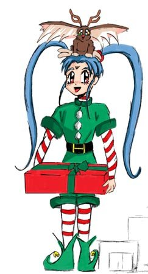

Introduction Fic |
By BGlanders (BGlanders@aol.com) Version 2.5 |
SCENE: (Our two favorite detectives are standing yet again before the gates to the TMFFA. They are dressed in cheery, Victoria Secret-esque Santa suits, topped off with cute, poofy red and white Santa hats. Basically, they look like hentai elves.)
MIHOSHI: Oh wow, here we are again! Wow Kiyone, that outfit looks really good on you!
KIYONE: Shut up, Mihoshi. Just. Shut. Up.
MIHOSHI: But it does! Gee, I think we both look good in them! It feels like we're elves or something!
KIYONE: We're not elves, we're Galaxy Police officers and the SECOND we get done here, I'm burning this ridiculous outfit.
MIHOSHI: Say Kiyone, something seems different form last time. I can't quite put my finger on it…
AZAKA: Greeting Ladies.
KAMIDAKE: Merry Christmas.
MIHOSHI: Oh, hi guys! Say, do you like our new outfits?
AZAKA: Are those the latest issue GP uniforms?
KAMIDAKE: They make you look like elves.
KIYONE: What?!
AZAKA: Yes. Little elves.
KIYONE: WHAT?!?
(Kiyone draws her blaster as Mihoshi tires to calm her partner down.)
MIHOSHI: Easy, Kiyone! The Guardians are not the ones you should point your gun at! Say Azaka, how'd that side job of yours go? I think I caught you on TV awhile back, but I wasn't sure…
AZAKA: We had a three-minute cameo in a show awhile back… It wasn't our finest hour.
KIYONE: What show was it?
KAMIDAKE: The one with 25 minutes of repetitive internal dialogue, cheesy fight scenes and a plot that just keeps on going.
MIHOSHI: Hmm… Drag-on Ball?
KIYONE: Couldn't be. He said, "plot."
(Da-dum dum.)
KIYONE: …You're right, Mihoshi. Now, we've just got to find a way to get inside… again…
(At this convenient moment, Ryoko enters in a lady Santa costume that would make St. Nicks jolly cheeks turn a few shades jollier. Over her shoulder is a rather large sack, presumably filled with presents.)
RYOKO: Hi gang. Merry Christmas!
ALL: Ryoko??
MIHOSHI: Oh hi Ryoko! Say, whatchya got there?
KIYONE: A sack full of presents, I would presume.
RYOKO: Good presumption, Kiyone…. Say, how come you're dressed like that?
KIYONE: (Now very red and very nervous) Well, um, you see…
RYOKO: Are you two elves or something?
(Kiyone fires off several volleys, each one missing Ryoko completely.)
RYOKO: Well, whatever floats your boat, right? Hey Guardians, how's about letting us in!
LOGS: Indeed.
(The tinsel covered gates of the archive open for just a moment, and Ryoko, Mihoshi and Kiyone scurry inside. As sson as the ladies leave, Azaka and KAMIDAKE sigh and whip out their ratted copies of 'Playlog')
AZAKA: I thought they would never leave.
KAMIDAKE: How's one supposed to read with all that jabbering? Really… Say, check out the pin up! Now THAT'S a coat of varnish!
AZAKA: (Flipping through the magazine, then folding out the picture.) Indeed.
(Moving on…)(Once inside, our heroines are greeted by a conservatively charismas-clothed Aeka.)
AEKA: Merry Christmas Mihoshi and Kiyone! Miss Ryoko…
RYOKO: Dang you must be in the Christmas spirit if you could acknowledge me without an insult! Feeling okay, little princess?
AEKA: Grrrrrrr….
(Ryoko is about to make another snide comment when a mallet slams into her noggin'. As she crumples to the floor, a VERY elf-like Washu can be seen behind her, grinning that insane, Washu grin.)
WASHU: Mind your manners, sweetie. It's Christmas, after all… (Washu notices the two GP detectives.) Say, what's with trying to copy my elf motif?
KIYONE: Look Washu, we are…
(Kiyone is cut off by a mallet blow to the head.)
WASHU: Little. Little Washu. You'd think they'd learn, but noooo…
MIHOSHI: Oh wow, you dressed as an elf too? Neat! You see we're here to…
KIYONE: (Getting up from the floor.) BE SILENT, MIHOSHI!… Hi Aeka. Hi… LITTLE Washu.
AEKA: I bid you welcome in the name of… THE MASTER!
(Dramatic music sounds!)
MIHOSHI: How do you do that? Every time I come here someone always says that, and that music always plays…
WASHU: Don't ask…
AEKA: …Don't tell.
GENSAO: Achoo!
ALL: …Hi Gen.
(A giant panda reveals himself from behind the lemon section of the archive.)
AEKA: Excuse me sir, but what were you doing back there?
GENSAO: Um…err… just… decorating for Christmas? Heh…
RYOKO: Pervert. Say Aeka, why did you call him sir? While we're at it, why are you and Washu here in the first place?
AEKA: I took this as a side job to earn some extra Christmas money. My cameo TV spots weren't bringing in as much as I needed, and Mr. GenSao needed a replacement greeter, so here I am.
WASHU: Ditto! Besides, the pay wasn't that bad and besides, with all the MSTings I've been forced into lately, I figured that a job here was just as good of a way as any to 'keep track' of all the writers that have been abusing their Little Washu privileges. Heh heh heh…
(Curious, Kiyone is about to ask what show Aeka did a guest spot on when she notices a nametag on Akea's clothing that says; Hello, my name is: Aekael. Shivering, Kiyone decides to let the matter drop. Meanwhile Washu…)
(WHAM!)(…LITTLE Washu summons her holo-top and begins to crunch numbers, an evil glint now in her eye.)
MIHOSHI: Wow. So whom did you two replace?
AEKA: Well…
(FLASHBACK: A rough-looking man with white hair and neat body armor (typical RPG attire) is standing inside the main hallway of the archive, ready to choose a fic to read. Before he can, an energy bolt fries him to a withering crisp.)
VEGITA: Merry Christmas, you pathetic human! A-HAHAHAHA!
KTHARDIN: …Why me?
(End Flashback)
RYOKO: …I see.
GENSAO: Moving on… what brings you to my chapel, ladies?
RYOKO: Well, I'm here as a delivery girl from the RFFC. (Ryoko reaches into her giant bag, and then pulls out a bunch of scantly clad Chibi-Ryoko-chan dolls.)
RYOKO: Here. These were individually picked out and hand crafted by your good friends, members #1-700.
GENSAO: (Now with tiny Ryoko-shaped stars in his eyes.) Thank you! Cool! I'm gonna put these up for decoration…well… most of them… (GenSao scoots several dolls offstage suspiciously.)
RYOKO: Riiiggghhht. ~sigh~ This is fun and all, but I sure wish Tenchi were here with us right now.
AEKA: As do I… say I just noticed; if this is a Tenchi Fan Fic site, then why aren't there any pictures of him to be found?
GENSAO: Wrong! This is a No Need for Tenchi Fan Fic site! I thought it would be a clever joke to continently leave Tenchi out, and then include all of you lucky girls!
KIYONE: You couldn't find any jpgs of Tenchi, could you?
GENSAO: …No.
RYOKO: … Speaking of which, little princess, we pitched together and got you a little something too, just to show that we don't really hate you as much as one would think.
(Aeka nervously smiles, and then accepts a large, wrapped package. As Aeka unwraps her present, it is revealed that the package is a giant Tenchi plushie dressed up like an old, 1930's gangster.)
RYOKO: There! Now that you've got a Tenchi, we figure you can leave mine alone!
AEKA: Um…err…~sigh~ Thank you, Miss Ryoko. Merry Christmas. And on that note…
(Aeka reaches behind the Misc. section and pulls out a giant Tenchi doll clad in Jurain battle armor. She then hands it to Ryoko.)
AEKA: Here. The AFC had pretty much the same idea.
RYOKO: ….Thanks Aeka. Merry… hey, merry Christmas!
(The two ladies smile at each other, and then poke at their respective Tenchi dolls.)
WASHU: Aww, that's so sweet of you, little Ryoko! Now where's mommy's gift?
RYOKO: ~sigh~ Fine. Merry Christmas… Mom.
(Little Washu jumps up and down for joy, and then hugs her 'daughter'.)
WASHU: Oh thank you, Ryoko! You've made me so happy!
GENSAO: Well, that explains why you're here, but why did you two ladies come? Are you here to imprison me again?
MIHOSHI: Well, actually we're here because of our own side jobs! Besides, the author didn't want to push his luck, so he let that gag go.
(In the distance, a shattering sound is heard.)
ALL: Fourth wall.
GENSAO: Anyway, back to you two. If you're not going to arrest me, then why are you here?
MIHOSHI: Actually, it has to do with you, Mr. Panda! You see, we…
KIYONE: (Twitching slightly) Mihoshi, this isn't something that warrants discussion…
AEKA: Just out of curiosity, just what are the two of you doing in those ridiculous outfits? Are you elves or something?
RYOKO: Maybe they're hentai elves.
GENSAO: (Now drooling) Mmmm… hentai elves…
KIYONE: (Drawing her blaster and twitching nervously) WE ARE NOT ELVES!
MIHOSHI: Kiyone no! We can't kill them yet, after all we've still got a job to do, remember?
KIYONE: But…I…we're…AAAARRRRGGG! Fine Mihoshi. You win.
MIHOSHI: Yay! Let's do it, Kiyone!
KIYONE: (Shooting a venomous glance towards Aeka and Ryoko) You tell ANYONE about this, and I will KILL YOU. Understand?
(Aeka and Ryoko nod, then watch as Mihoshi whips out her cube. Before she can start fiddling with it, Kiyone already has one of her own out and has begun turning the translucent puzzle in her hands. Before long, a boom box appears from subspace next to the GP duo.)
MIHOSHI: (Very enthusiastically) From all of us online…!
KIYONE: (Very defeated) …To you, oh humble master…
(Dramatic music sounds!)
KIYONE: …of the TMFFA.
MIHO&KIO: Merry Christmas!
(To everyone's amazement, the two officers start singing and dancing to the tune of "Jingle Bell Rock", making lurid gestures towards the now deeply enthralled panda before them. Behind the girls, a small billboard appears, flashing the following: M. Girls Incorporated
Presenting:
Miho & Kio: Two naughty little elves.
Call (323) 555-5555 for reservations.
Merry Christmas!
WASHU: M. Girls incorporated?
RYOKO: Who would come up with such an odd name?
AEKA: Let alone business idea?
PRETTY SAMMY: Hi everybody!
(Sweat drops all around.)
***
GENSAO: From all of us…
RYOKO: …To all of you.
MIHOSHI: Have a merry Christmas,
KIYONE: And a happy new year!
AEKA: Happy holidays to all…
WASHU: May they be filled with love,
KAMIDAKE: And lots of Yule time cheer.
AZAKA: Indeed.
ALL: THANKS FOR READING, AND MERRY CHIRSTMAS!!!
***
Tenchi & Co. belong to AIC, TV Tokyo and the unstoppable juggernaut of
Anime distribution, Pioneer.
Vegita is owned by Viz and Pioneer.
Any and all CC to
BGlanders@aol.com, please.
Yes, I'm still alive. Happy holidays!
End Notes |
Hello,
Happy Holidays!
I hope you have enjoyed the short fan fiction. I personally loved this Christmas version of the introductory fic. I must have been crazy to comission BGlanders to write a introductory fic to the holiday version the site. Please give all C&C to BGlanders. He is great guy and deserves your feedback.
Please enjoy the rest of your visit to the Tenchi Muyo Fan Fiction archive. And, please don't let this fic unjustly warp your opinion about me.
--Aldrich "GenSao" Bautista
Maintainer of the Tenchi Muyo Fan Fiction Archive